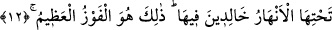

FETİHTEN ÖNCE HARCAYAN
VE SAVAŞANLARIN DERECESİ
7. Allah’a ve Resûlü’ne îman edin. Sizi, üzerinde tasarrufa yetkili kıldığı
şeylerden harcayın. Sizden îman edip de (Allah rızâsı için) harcayan kimselere
büyük mükâfât vardır.
8. Peygamber sizi, Rabbinize îman etmeye çağırdığı halde niçin Allah’a
inanmıyorsunuz? Halbuki O, sizden kesin söz de almıştı. Eğer inanırsanız.
9. Sizi karanlıklardan aydınlığa çıkarmak için kuluna apaçık âyetler indiren
O’dur. Şüphesiz Allah, size karşı çok şefkatli, çok merhametlidir.
10. Ne oluyor size ki, Allah yolunda harcamıyorsunuz? Halbuki göklerin ve yerin
mirası Allah’ındır. Elbette içinizden, fetihten önce harcayan ve savaşanlar, daha
sonra harcayıp savaşanlara eşit değildir. Onların derecesi, sonradan infâk eden ve
savaşanlardan daha yüksektir. Bununla beraber Allah hepsine de en güzel olanı
vaâd etmiştir. Allah yaptıklarınızdan haberdârdır.
11. Kim Allah’a güzel bir ödünç verecek olursa, Allah da onun karşılığını kat kat
verir ve ayrıca onun çok değerli bir mükâfâtı da vardır.
12. Mü’min erkeklerle mü’min kadınları, önlerinden ve sağlarından,
(amellerinin) nurları aydınlatıp giderken gördüğün günde, (onlara): Bugün